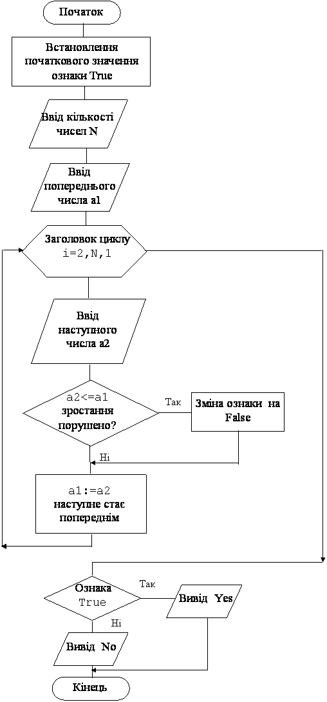

Назад
Зміст
Вперед
Задачі з використанням двох змінних для вводу послідовності чисел
В попередніх задачах для вводу будь-якої послідовності чисел ми використовували одну змінну. На кожному наступному витку циклу ми вводили нове значення у цю змінну затираючи попереднє значення. Це нас влаштовувало, бо попереднє значення цієї змінної нам було не потрібно. Але існують задачі в яких потрібні два значення: „попереднє” (a1) та „наступне” (a2), наприклад для порівняння. Причому, кожне число (окрім першого та останнього) на одному витку циклу є „наступним”, а на другому витку „попереднім”.
Нехай, наприклад, нам потрібно ввести чотири числа: 4 5 3 2.
На першому витку циклу „попереднє” 4, а „наступне” 5.
На другому витку циклу „попереднє” 5, а „наступне” 3.
На третьому витку циклу „попереднє” 3, а „наступне” 2.
В цих випадках перед циклом вводиться „попереднє”, в циклі завжди вводиться „наступне”, а перед переходом на наступний виток циклу „наступне” стає „попереднім”.
Правило
- Перед циклом потрібно ввести перше число у змінну (a1). Воно буде „попереднім”.
- У циклі, for i:=2 to n do (цикл від 2, бо одне число вже ввели):
- Вводиться „наступне” число у змінну (a2)
- З числами a1 та a2 виконуються необхідні дії, наприклад їх порівнюють (або використовують інший алгоритм).
- Перед переходом на наступний виток циклу, „наступне” значення повинно стати „попереднім”. Для цього використовують присвоювання a1:=a2.
- Після завершення циклу виводять на екран результат.
|
Приклад 1
Дано n дійсних чисел. Чи є ця послідовність зростаючою?
Дано: кількість чисел та самі числа.
Знайти: Якщо кожне „наступне” число більше „попереднього”, то надрукувати yes, якщо є число яке менше чи дорівнює тому що перед ним, то надрукувати no.
Ясно, що у цій програмі окрім описаного нового алгоритму, потрібно використовувати вже відомий алгоритм „з логічною змінною”, або з ознакою. Цей алгоритм потрібний, бо для деякої послідовності чисел, потрібно відповісти на питання „так”, або „ні”.
Результат роботи програми
| Ввід | Вивід | Пояснення |
|---|
5
1 2 13 44 68 | Yes | Чисел 5.
1<2<13<44<68, тому Yes
|
4
1 7 5 6 | NO | Чисел 4.
1<7, але 7>5, тому No
|
6
0 1 3 4 5 5 | NO | Чисел 6.
0<1<3<4<5, але 5=5, тому No
|
Змінні:
Вхідні:
- n – кількість чисел (цілого типу)
- a1 – «попереднє» число (дійсного типу)
- a2 – «наступне число» (дійсного типу)
Вихідні:
- f – ознака (логічного типу). Якщо значення цієї змінної дорівнює true, то послідовність чисел зростає, якщо значення цієї змінної зміниться на false, то ні.
Проміжні:
- i – параметр циклу (цілого типу)
Алгоритм
- Спочатку потрібно присвоїти початкове значення ознаці f:=true. Будемо вважати, що послідовність зростає. Тоді якщо зустрінемо не зростання, змінимо це значення на протилежне.
- Вводимо n – кількість чисел, що будемо вводити.
- До початку циклу вводимо перше число у змінну a1. Воно буде «попереднім». Його будемо порівнювати з «наступним» a2.
- Оскільки перше число введено, то заголовок циклу буде мати вигляд: for i:=2 to n do . У операторних дужках будемо виконувати такі дії:
- Оператор read(a2) вводить «наступне» число у змінну a2.
- Будемо шукати не зростання, тобто якщо введене «наступне» число a2 менше чи дорівнює «попередньому» a1 (тобто не відповідає припущенню для початкового значення ознаки), то змінюємо значення змінної на f:=false. У протилежному випадку нічого не робимо, тобто значення f не змінюється.
- Введене число a2 на цьому витку циклу є «наступним». На наступному витку циклу воно буде «попереднім». Тому перед переходом на наступний виток циклу потрібно виконати оператор a1:=a2.
- Коли цикл закінчиться, тобто будуть введені всі n чисел, значення змінної f (ознаки) або залишиться початковим true (якщо завжди було a2>a1), або зміниться на false (якщо хоча б один раз було a2<=a1).
- Після завершення циклу потрібно перевірити значення змінної f.
- Якщо f=false, то надрукувати no.
- Якщо f=true, то надрукувати yes.
Блок–схема програми

Програма
var i,n:integer; f:boolean;a1,a2:real;
begin
f:=true;
read(n);read(a1);
for i:=2 to n do
begin
read(a2);
if a2<=a1 then f:=false;
a1:=a2;
end;
if f then writeln('yes')else writeln('no');
end.
|
Приклад 2
Ввести з клавіатури n будь-яких цілих чисел. З’ясуйте чи створюють ці числа зростаючу арифметичну прогресію, тобто чи є різниця між „наступним” та „попереднім” числами додатною та однаковою для всіх чисел. Відповідь „так” чи „ні”.
Дано: кількість чисел та самі числа.
Знайти: Якщо кожне „наступне” число більше „попереднього” на однакове додатне число, то надрукувати yes, якщо ні, то надрукувати no.
Ясно, що у цій програмі, окрім описаних вище алгоритмів, потрібно знайти різницю між другим та першим числами і, якщо вона додатна, порівнювати її з різницею між третім та другим, четвертим та третім і.т.і. А для того, щоб знайти різницю між першим та другим числами, потрібно два перших числа ввести до початку циклу, а інші числа вже вводити в циклі.
Результат роботи програми
| Ввід | Вивід | Пояснення |
|---|
5
3 6 9 12 15 | Yes | Чисел 5. 6-3=3, це >0,
9-6=3, 12-9=3, 15-12=3, тому Yes
|
4
12 8 4 0 | NO | Чисел 4.
8-12=-4, це <0, тому No
|
3
10 12 15 | NO | Чисел 3. 12-10=2, це >0,
15-12=3, 3<>2, тому No
|
Змінні:
Вхідні:
- n – кількість чисел (цілого типу)
- a0 – перше число (цілого типу)
- a1 – «попереднє» число (цілого типу)
- a2 – «наступне число» (цілого типу)
Вихідні:
- f – ознака (логічного типу). Якщо значення цієї змінної дорівнює true, то послідовність чисел є зростаючою арифметичною прогресією, якщо значення цієї змінної буде false, то ні.
Проміжні:
- i – параметр циклу (цілого типу)
- p1 – різниця між „другим” та „першим” числами (цілого типу, бо числа цілі)
- p2 – різниця між „наступним” та „попереднім” числами (цілого типу, бо числа цілі)
Алгоритм
- Вводимо n – кількість чисел, що будемо вводити.
- Вводимо перше число у змінну a0, а друге число у змінну a1 (воно буде „попереднім”).
- Знайдемо різницю між другим та першим числом: p1:=a1-a0.
- Тепер потрібно присвоїти початкове значення ознаці f. Якщо p1>0, то f:=true, тобто будемо вважати, що послідовність зростає і є арифметичною прогресією. Якщо p1<0, то f:=false, бо послідовність вже не є зростаючою.
- Оскільки введено вже два числа, то заголовок циклу буде мати вигляд: for i:=3 to n do. У операторних дужках будемо виконувати такі дії:
- Оператор read(a2) вводить „наступне” число у змінну a2.
- Знайдемо різницю між „наступним” та „попереднім” числами оператором p2:=a2-a1.
- Будемо шукати порушення того, що ці числа утворюють зростаючу арифметичну послідовність. Тобто якщо обчислена різниця між „наступним” та „попереднім” числами p2 не співпадає з різницею між „першим” та „другим” числами p1, то змінюємо значення змінної на f:=false. У протилежному випадку нічого не робимо, тобто значення f не змінюється.
- Введене число a2 на цьому витку циклу є «наступним». На наступному витку циклу воно буде «попереднім». Тому перед переходом на наступний виток циклу потрібно виконати оператор a1:=a2.
- Коли цикл закінчиться, тобто будуть введені всі n чисел, значення змінної f (ознаки) або залишиться початковим true (якщо завжди було p2=p1), або зміниться на false (якщо хоча б один раз було p2<>p1).
- Після завершення циклу потрібно перевірити значення змінної f.
- Якщо f=false, то надрукувати no.
- Якщо f=true, то надрукувати yes.
Програма
var i,n:integer; f:boolean;p1,p2,a0,a1,a2:integer;
begin
read(n);read(a0);read(a1); p1:=a1-a0;
if p1>0 then f:=true else f:=false;
for i:=3 to n do
begin
read(a2);p2:=a2-a1;
if p2<>p1 then f:=false;
a1:=a2;
end;
if f then writeln('yes')else writeln('no');
end.
|
Варіанти задач
- Дано n дійсних чисел. Чи є ця послідовність спадаючою? Відповідь „так” чи „ні”.
- Дано n цілих чисел. З кожних двох різних „сусідніх” чисел виведіть на екран найбільше. Наприклад, для п’яти чисел 3 4 2 6 6 потрібно вивести 4 (для пари 3 4), 4 (для пари 4 2), 6 (для пари 2 6). Пара 6 6 містить однакові числа, тому нічого не виводиться.
- Дано n цілих чисел. З кожних двох різних „сусідніх” чисел виведіть на екран найменше. Наприклад, для п’яти чисел 3 4 2 6 6 потрібно вивести 3 (для пари 3 4), 2 (для пари 4 2), 2 (для пари 2 6). Пара 6 6 містить однакові числа, тому нічого не виводиться.
- Дано n цілих чисел. З’ясуйте, чи є ця послідовність знакозмінною, тобто такою, в якій два сусідніх числа мають різні знаки. Відповідь „так” чи „ні”.
- Дано n цілих чисел. З’ясуйте, чи є ця послідовність такою, в якій два сусідніх числа мають різну парність, тобто парні та непарні числа йдуть по черзі. Наприклад, для послідовності з чотирьох чисел 1, 2, 7, 4, відповідь буде „так”, а для послідовності 2 3 5 8 відповідь буде „ні”.
- Дано n цілих чисел ( 1 та 0). З’ясуйте, чи є ця послідовність 1 та 0 такою, в якій одиниці та нулі йдуть по черзі. Наприклад, для послідовності з чотирьох чисел 1, 0, 1, 0, відповідь буде „так”, а для послідовності 1 1 0 1 відповідь буде „ні”.
- Дано n цілих чисел. З’ясуйте, чи є в цій послідовності хоча б одна пара однакових «сусідніх» чисел. Наприклад, серед п’яти чисел 4 4 6 6 7, є однакові сусідні числа 4 4 та 6 6, а серед чисел 3 4 6 7 6 немає. Відповідь „так” чи „ні”.
- Дано n дійсних чисел. З’ясуйте, чи є в цій послідовності хоча б одна пара додатних «сусідніх» чисел. Наприклад, серед п’яти чисел 3 -4 6 8 7, є додатні сусідні числа 6 8 та 8 7, а серед чисел 3 -4 -6 -7 6 немає. Відповідь „так” чи „ні”.
- Дано n цілих чисел. З’ясуйте, чи є в цій послідовності хоча б одна пара «сусідніх» чисел, в яких „попереднє” число кратно 3, а „наступне” кратно 5. Наприклад, серед шести чисел 0 6 10 6 5 7, є такі пари 6 10 та 6 5, а серед чисел 8 5 6 7 6 1 немає. Відповідь „так” чи „ні”.
- Ввести з клавіатури n будь-яких цілих чисел. З’ясуйте чи створюють ці числа спадаючу арифметичну прогресію, тобто чи є різниця між „наступним” та „попереднім” числами від’ємною та однаковою для всіх чисел. Відповідь „так” чи „ні”.
- Ввести з клавіатури n будь-яких чисел. З’ясуйте чи створюють ці числа зростаючу геометричну прогресію, тобто чи є частка від ділення „наступного” числа на „попереднє”, однаковою та більше 1 для всіх чисел. Відповідь „так” чи „ні”.
- Ввести з клавіатури n будь-яких чисел. З’ясуйте чи створюють ці числа спадаючою геометричну прогресію, тобто чи є частка від ділення „наступного” числа на „попереднє”, однаковою, додатною та меншою 1 для всіх чисел. Відповідь „так” чи „ні”.
- Ввести з клавіатури n будь-яких чисел. Визначте максимальну кількість однакових чисел, що йдуть підряд. Наприклад, серед восьмі чисел 3 4 4 5 7 7 7 3, максимальна кількість однакових чисел дорівнює 3.
- Ввести з клавіатури n будь-яких чисел. Знайти суму добутків „попередніх” та „наступних” чисел. Наприклад, для чотирьох чисел 2 4 5 3 знайти 2*4+4*5+5*3.
- Ввести з клавіатури n будь-яких чисел. Знайти максимальне серед добутків „попередніх” та „наступних” чисел. Наприклад, для чотирьох чисел 2 4 5 3 з добутків 2*4=8, 4*5=20, 5*3=15 максимальним буде 20.
- Ввести з клавіатури n будь-яких чисел. Знайти мінімальне серед сум „попередніх” та „наступних” чисел. Наприклад, для чотирьох чисел 2 4 5 3 з сум 2+4=6, 4+5=9, 5+3=8 мінімальною буде 6.
Назад
Зміст
Вперед